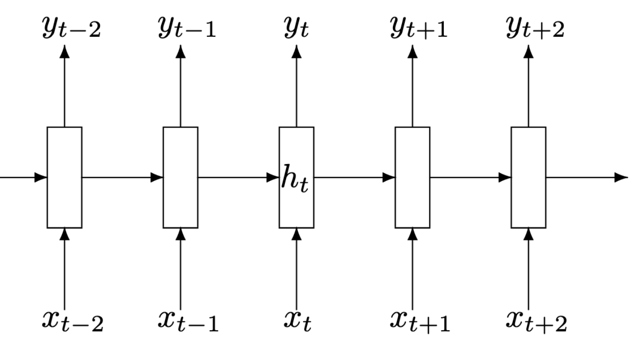

Youth AI club
Recurrent neural networks basics
Alex Avdiushenko
November 20, 2024
In the last episode
- Expressive power of neural networks
- Demo in PyTorch
- Cross-entropy loss for binary classification
- Backpropagation algorithm
Disadvantages of Feed-Forward (and also Convolutional) Neural Networks
Or why we need recurrent ones :)
- The input is only fixed-dimensional vectors (e.g., 28×28 images)
- The output is also a fixed dimension (for example, probabilities of 1000 classes)
- Fixed number of computational steps (i.e., network architecture)

Architectures of Recurrent Networks

|

|
| Vanilla Neural Networks | Image Captioning image → (sequence of words) |

|

|
| Sentiment Classification (sequence of words) → sentiment |
Machine Translation (seq of words) → (seq of words) |

Video Classification
(on frame level)
Sequential Processing of Fixed Input

J. Ba, V. Mnih, K. Kavukcuoglu. Multiple Object Recognition with Visual Attention
Sequential Generation of Fixed Output

Recurrent Neural Network scheme
Recurrent Neural Network
We process the sequence of vectors $x$ with one and the same function with parameters:
$$ h_t = f_W(h_{t-1}, x_t)$$$f_W$ is a function parameterized by $W$
$x_t$ — next input vector
$h_t$ — hidden state
Question: What function can we take as $f_W$?
Vanilla Recurrent Neural Network
$$ h_t = f_W(h_{t-1}, x_t)$$As a function $f_W$ we set a linear transformation with a non-linear component-wise "sigmoid":
$$ \begin{align*} h_t &= \tanh ({\color{orange}W_{hh}} h_{t-1} + {\color{orange}W_{xh}} x_t) \\ y_t &= {\color{orange}W_{hy}} h_t \end{align*} $$Character Level Model Example
The entire four-letter dictionary: [h, e, l, o] and word "hello" as train:

Softmax is also applied to the values of the out-layer to get the loss
Demo
numpy implementation by Karpathy
Let's get to grips with the code in the Jupyter notebook!
How does it work?


Deep Recurrent Networks
$$ \quad h_t^\ell = \tanh {\color{orange}W^\ell} \left(\begin{array}{c} h_t^{\ell-1} \\ h_{t-1}^{\ell} \end{array}\right) $$ $$ \quad h \in \mathbb{R}^n, \quad {\color{orange}W^\ell} [n \times 2n] $$

Long short-term memory (LSTM)
$$ \begin{align*} &{\color{orange}W^\ell} [4n\times 2n] \\ \left(\begin{array}{c} i \\ f \\ o \\ c_t^\prime \end{array}\right) &= \left(\begin{array}{c} \text{sigm} \\ \text{sigm} \\ \text{sigm} \\ \tanh \end{array}\right) {\color{orange}W^\ell} \left(\begin{array}{c} h_t^{\ell-1} \\ h_{t-1}^{\ell} \end{array}\right) \\ &\begin{array}{l} c_t^\ell = f \odot c_{t-1}^\ell + i \odot c_t^\prime \\ h_t^\ell = o \odot \tanh(c_t^\ell) \end{array} \end{align*} $$$\odot$ — component-wise product
LSTM: Motivation and Schema
The network should remember the context for a long time. Which context? The network learns itself. To do this, the vector \(c_t\) is introduced, which is the state vector of the network at the moment \(t\).
| \(c_t^\prime = \tanh({\color{orange}W_{xc}}x_t + {\color{orange}W_{hc}}h_{t-1} + {\color{orange}b_{c^\prime}})\) | candidate cell state |
| \(i_t = \sigma({\color{orange}W_{xi}}x_t + {\color{orange}W_{hi}}h_{t-1} + {\color{orange}b_{i}})\) | input gate |
| \(f_t = \sigma({\color{orange}W_{xf}}x_t + {\color{orange}W_{hf}}h_{t-1} + {\color{orange}b_{f}})\) | forget gate |
| \(o_t = \sigma({\color{orange}W_{xo}}x_t + {\color{orange}W_{ho}}h_{t-1} + {\color{orange}b_{o}})\) | output gate |
| \(c_t = f_t \odot c_{t-1} + i_t \odot c_t^\prime\) | cell state |
| \(h_t = o_t \odot \tanh(c_t)\) | block output |
GRU: Gated Recurrent Unit
$$ \begin{align*} u_t &= \sigma({\color{orange}W_{xu}}x_t + {\color{orange}W_{hu}}h_{t-1} + {\color{orange}b_{u}}) \\ r_t &= \sigma({\color{orange}W_{xr}}x_t + {\color{orange}W_{hr}}h_{t-1} + {\color{orange}b_{r}}) \\ h_t^\prime &= \tanh({\color{orange}W_{xh^\prime}}x_t + {\color{orange}W_{hh^\prime}}(r_t\odot h_{t-1})) \\ h_t &= (1-u_t) \odot h_t^\prime + u_t \odot h_{t-1} \end{align*} $$Only \( h_t \) is used, vector \( c_t \) is not introduced. Update-gate instead of input and forget. The reset gate determines how much memory to move forward from the previous step.
Disadvantages of Vanilla RNN
$$ h_t = f_W(h_{t-1}, x_t)$$As a function \( f_W \) we set a linear transformation with a non-linear component-wise "sigmoid":
$$ \begin{align*} h_t &= \tanh ({\color{orange}W_{hh}} h_{t-1} + {\color{orange}W_{xh}} x_t) \\ y_t &= {\color{orange}W_{hy}} h_t \end{align*} $$Disadvantages
- Input and output signal lengths must match
- "Reads" the input only from left to right, does not look ahead
- Therefore, it is not suitable for machine translation, question answering tasks, and others
RNN for sequence synthesis (seq2seq)
\(X = (x_1, \dots, x_n)\) — input sequence
\(Y = (y_1, \dots, y_m)\) — output sequence
\(\color{green}c \equiv h_n\) encodes all information about \(X\) to synthesize \(Y\)

Summary
- Recurrent neural networks — a simple, powerful, and flexible approach to solving various machine learning problems
- Vanilla RNNs are simple, but still not good enough
- So you need to use LSTM or GRU, and seq2seq architecture
- LSTM prevents zeroing gradients
- Clipping helps with "explosion of gradients" as usual
- We need a deeper understanding, both theoretical and practical — there are many open questions
What else can you look at?
- Lecture 10 of the course "CS231n" by Andrej Karpathy at Stanford
- How to train neural networks?
- Oct, 2022 interview of Andrej Karpathy by Lex Fridman